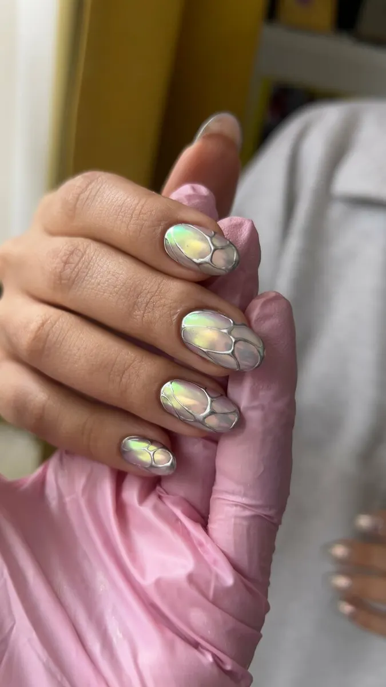
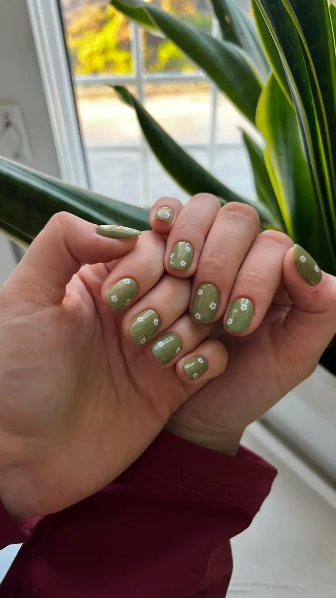
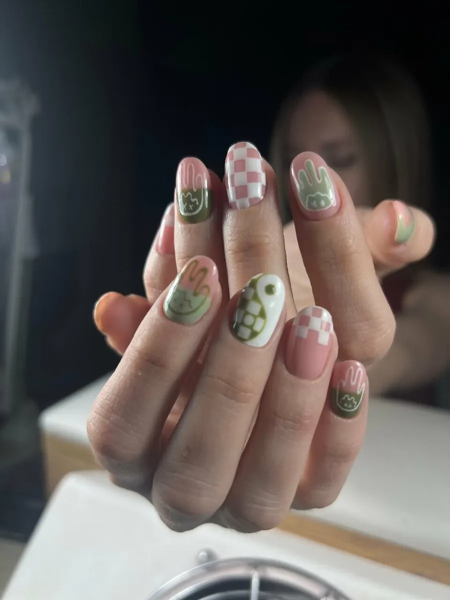
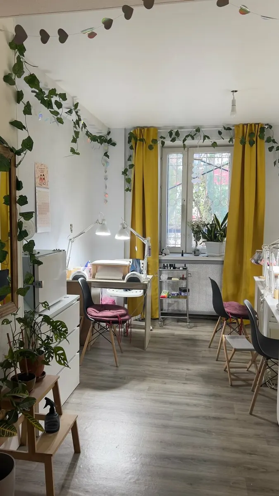

Ногтевая студия · Мурманск
Маникюр в Мурманске – сначала посмотрите работы
Студия на Октябрьской, 8: работы мастеров и цены – на этой странице. Выберите услугу, день и время – запись уйдёт в WhatsApp студии.
- Ежедневно 10:00–20:00
- Детская комната и Wi-Fi
- Оплата картой, по СБП или наличными

Цены
Цены с карточки студии на Яндекс.Картах. Маникюр с покрытием – «от»: итог зависит от длины и дизайна.
Маникюр
- Маникюр без покрытиякомбинированный: аппарат и ножницы1 500 ₽
- Маникюр с покрытиемклассический женскийот 2 500 ₽
Педикюр
- Педикюр без покрытия2 500 ₽
- Педикюр с покрытием3 000 ₽
Наращивание, дизайн и другие услуги – цену подскажут в WhatsApp или Telegram.
Как проходит визит
- 01
Записываетесь онлайн
Услуга, день и время – готовый текст уходит в WhatsApp студии.
- 02
Октябрьская, 8
Вход с улицы. Гости пишут в отзывах, что студию легко найти по красивой двери.
- 03
Можно с ребёнком
В студии есть детская комната, а Wi-Fi – для тех, кто ждёт.
- 04
Мастер делает маникюр
Форму и цвет обсуждаете до начала, цена известна заранее.
- 05
Оплата как удобно
Картой, по СБП, QR-коду, переводом или наличными.



Удобно прийти
Детская комната
Можно прийти с ребёнком.
С собакой
Можно с собаками до 35 см.
Парковка
Рядом со студией есть парковка.
Сертификат
Подарочный сертификат – напишите, на какую сумму.
Отзывы с Яндекс.Карт
«Все девочки знают как сложно найти «своего мастера»… А что если Вы как и я оказались в Мурманске проездом? Смело идти в Нэйлрум, если хотите получить качественный и быстрый сервис, чудесную атмосферу уюта и тепла,женской энергии. Всем от души советую. Сделала маникюр и педикюр после похода по Хибинам! Спасибо девушкам из студии! Привет из Санкт-Петербурга!»
Ирина · 21 сентября 2026
«Огромная благодарность за идеальный результат и скорость мастеру Татьяне! Красивый маникюр за 1,5 часа реально! 🙏🏽»
Анастасия Киршина · 20 июня 2025
«Салон отличный, стильный, было легко найти по красивой двери.Внутри уютно. Атмосфера доброжелательная. Качество работы великолепное! Кресло для педикюра очень удобное! Спасибо!»
Татьяна Онегина · 22 августа 2025
Отзывы с карточки на Яндекс.Картах, без правок.
Частые вопросы
Сколько длится маникюр?
Гости пишут в отзывах, что красивый маникюр с покрытием делают примерно за полтора часа.
Можно прийти с ребёнком или с собакой?
Да: в студии есть детская комната, а собак пускают до 35 см.
Есть подарочный сертификат?
Да, сертификат есть – напишите в WhatsApp или Telegram, на какую сумму.
Как оплатить?
Картой, по СБП или QR-коду, переводом или наличными.
Запись ежедневно с 10 до 20
- Адрес
- Октябрьская ул., 8, Мурманск
- Часы
- Ежедневно 10:00–20:00, по записи
- Телефон
- +7 (953) 303-52-55